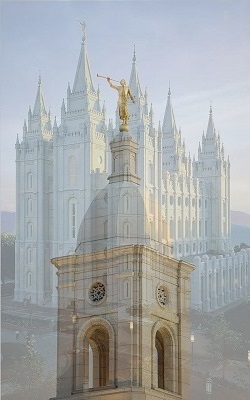
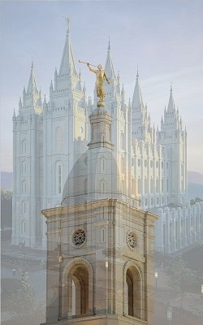

Reserve your room today!
Sacramento California Temple
Dedicatory Prayer
3 September 2006
O God, our Eternal Father, Thou great Elohim, in the name of Thy Beloved Son, we come unto Thee in solemn prayer.
This is a time of great significance to us, Thy sons and daughters, when we dedicate this, the Sacramento California Temple of The Church of Jesus Christ of Latter-day Saints.
Now, acting in the authority of Thy holy priesthood, we dedicate and consecrate unto Thee and unto Thy Son this sacred structure as the house of the Lord, a house of holy ordinances, where Thine eternal work may be carried forward.
We ask that Thou wilt accept it as a gift of love for Thee and for Thy Son.
We dedicate the ground on which it stands with its beautiful plantings. We dedicate the foundation, the walls, and the roof with the crowning figure of Moroni. We dedicate all of the interior elements with all of the appurtenances associated therewith, the baptistry, the ordinance rooms, the sealing rooms, the offices, and the magnificent celestial room.
May Thy watch care be over this sacred edifice. Keep it from the destructive elements of nature and from the hand of the vandal. If any hand be raised against it, may it be summarily stricken down.
May no unworthy individual enter these sacred portals. May all who serve here in any capacity, be they workers or patrons, be worthy in every respect. Wilt Thou impress upon their minds an understanding of the sacred work in which they will be engaged.
We invoke Thy blessings on those who will preside in this temple, the president and his counselors, the matron and her assistants. Give them strength that they will not weary in their dedicated service.
We pray for this nation of which we are citizens, that the liberties and freedoms of the people may be preserved, that righteousness may reign, and peace may prevail. Take from our hearts all bitterness and hatred, and end the conflicts which rage in many quarters.
We pray for this great State of California. This temple, in the environs of the capital city, joins its six sister institutions in providing for the needs of Thy faithful Saints in this part of the nation.
Father, this house has been made possible by the tithes and offerings of Thy people throughout the world. Keep Thine ancient promise unto them. Open the windows of heaven and shower blessings upon them, such that there will not be room to contain them. Bless them for their faithfulness.
We thank Thee, O Father, for the restoration of the gospel through the instrumentality of Thy prophet Joseph Smith, with the authority and the keys related to work for both the living and the dead. As he prayed at Kirtland:
"Deliver thy people from the calamity of the wicked; enable thy servants to seal up the law, and bind up the testimony" (Doctrine and Covenants 109:46).
Bless Thy Church that it "may come forth out of the wilderness of darkness, and shine forth fair as the moon, clear as the sun, and terrible as an army with banners.
"And be adorned as a bride for that day when thou shalt unveil the heavens, and cause the mountains to flow down at thy presence, and the valleys to be exalted, the rough places made smooth; that thy glory may fill the earth" (Doctrine and Covenants. 109:73-74).
Now in conclusion, dear Father, we ask that Thou wilt bless Thy servants whom Thou hast called to preside over this work. Give them wisdom and energy to do what Thou hast called them to do. Make them adequate to every responsibility that has been placed upon them.
For these things we humbly pray, to Thy glory and that of Thy Son, in the sacred and holy name of Jesus Christ, amen.
 
